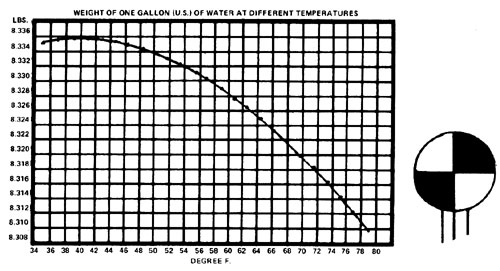
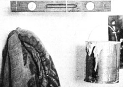
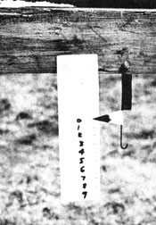

A couple of months ago, my wife and I went into town to buy a scale. We'd decided to tighten up our rabbit raising operation . . . and figured that if we could weigh the feed going in and the bunnies coming out, we'd have a better handle on the efficiency (or lack of it) of the whole enterprise.
We came home disillusioned. The, scale most suited to our purpose cost $14.00 and only weighed to an accuracy of 1/10 pound. Now $14.00 is a lot of money to us . . . especially for an item that seemed to me worth about five bucks.
Then I remembered my trusty old Handbook of Chemistry and Physics, and its table which listed the weight of water to five decimal places. And I thought to myself: I've got a whole well full of water! This set in motion a chain of events which finally led me to construct a couple of sets of scales both every bit as accurate as those in town-at a cost of nothing!
The first scale I made was a simple carpenter's level" balance. (The little spirit bubble made a fine balance indicator.) I wired a burlap sack to one end of the level, and an empty paint bucket to the other (see Photo 1). Then I tied a string around the middle, suspended the whole mess, and shifted things back and forth until the level was . . . well, level.
Next, I put a bunny in the burlap sack and poured water into the bucket until everything balanced again. Finally, with the rabbit safely back in its cage, I measured the water with an ordinary measuring cup divided into fluid ounces . . . and there was the weight of the rabbit! I estimated my error as plus or minus an ounce . . . not bad for a scale that I had put together in five minutes!
Chemists, of course, have developed the measurement of fluids into an art. With a graduated cylinder you can determine the volume of water to within tiny fractions of an ounce. (If you ever required this kind of accuracy you'd need to know the water's temperature too, since its density does change with temperature. For most situations, however, you can figure that a gallon of cool water weighs 8.33 pounds.)
The main disadvantage of a simple balance, such as the one I rigged up from my carpenter's level, is that you have to measure water each time you want to weigh something. After I'd been through that more than I liked, I began to think about making a balance-type scale that I could calibrate just once . . . complete with a pointer, counterweight, and other fancy features. Then I had an even better idea.
I decided to construct the simplest of all scales: a spring scale. All I had to do, I figured, was hang up a spring, dangle a known amount of water from the end, and mark how far the spring stretched. And it worked! This simple act of calibration can, I found, transform an ordinary spring into the equivalent of a $14.00 scale.
I should probably point out that the accuracy of this kind of scale is limited by the stretchiness of its main working component. A loose, very elastic spring can measure small weights quite precisely . . . as long as you don't put enough weight on it to permanently deform or "set" the spring. On the other hand, a large, stiff coil can measure heavier weights but its accuracy is limited by the fact that it doesn't stretch much per pound of additional load. So, you have to play one against the other.
Since I wanted to weigh rabbits from birth until selling age, I looked for a spring that'd stretch at least an inch per pound. With this in mind, I came up with the best "weighin' coil" I could find: the throttle spring from an old car (which, it turned out, enabled me to check the poundage of every bunny on the farm from the youngest to the oldest with a total error of only about four ounces). I nailed the spring to a scrap piece of 2 X 4, glued a cardboard pointer right to the end of the coil, thumb tacked a piece of white cardboard next to the pointer, and-presto!-l had my scale.
To calibrate the measuring device, I hung a burlap sack-the one I would be using to hold rabbits-on the spring and marked the zero point. I next replaced the sack with the old paint bucket from my first scale. The bucket weighed a bit more, so I marked the extra deflection on the cardboard and remembered to subtract it throughout the calibration procedure. Then I simply poured exactly one pound of water into the bucket, marked the deflection on the cardboard, added another pound of water, marked the deflection, and so on (Photo 2).
If you're really interested in accuracy, it's best to pour the water out each time and remeasure rather than to just add one-pound increments. This is because if you systematically over or under estimate the amount of water each time you add a pound, the errors will add up as you go along . . . whereas if you measure the total amount of water each time, the errors at least will not be cumulative.
My spring scale took ten minutes to build and maybe half an hour to calibrate. It's not the prettiest piece of weighing equipment in the world, nor the most accurate. But at a cost of nothing but a little time and a few "junk" odds and ends, its price is certainly hard to beat!
|
 Photo I shows the simple balance scale I made in minutes using a carpenter's level, a paint bucket, and a burlap bunny bag. |
 Photo 2: Scale made from a car's throttle spring can weigh up to 9 pounds. |
 |